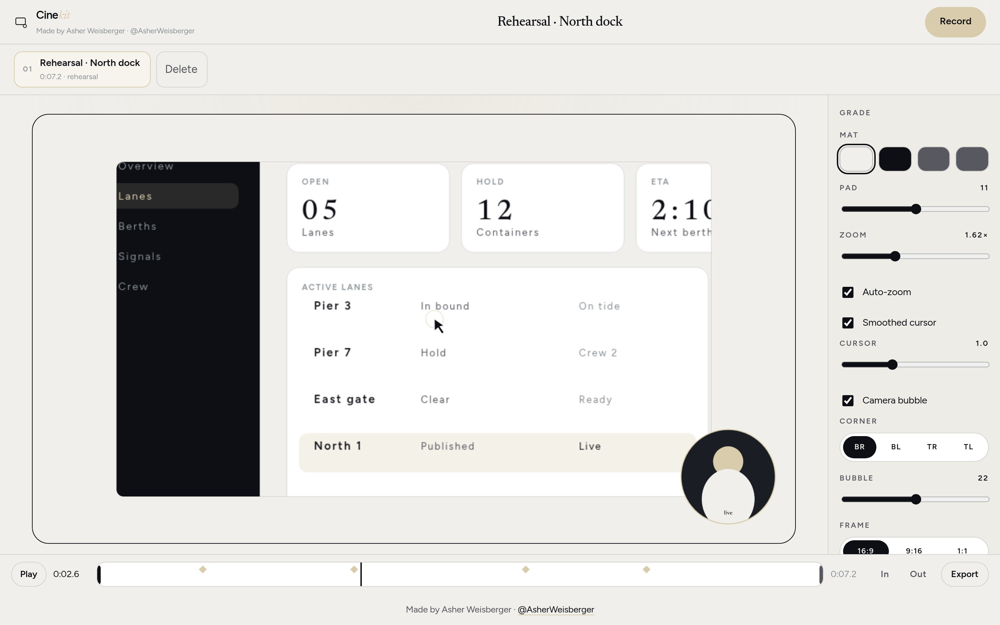

Replaces Xnapper Framekit Stage a screenshot. Padding, shadow, a studio background — then download. Open → Source
Replaces Smallpdf StackPDF Merge, split, and save as Word. The files never leave this tab. Open → Source
Replaces CapCut BestCut A local 9:16 editor. Split, title, caption, export. On a phone. Open → Source
Replaces Photoroom / remove.bg Mattekit Cut the subject out in the tab. Hair-ok. No credits. Open → Source
 Replaces Screen Studio Cinekit Record a take. The kit leans in on the click, mats the frame, exports in the tab. Open → Source
Replaces Wispr Flow Speakkit Hold to talk. The page writes in this tab. Copy when the line is right. Open → Source